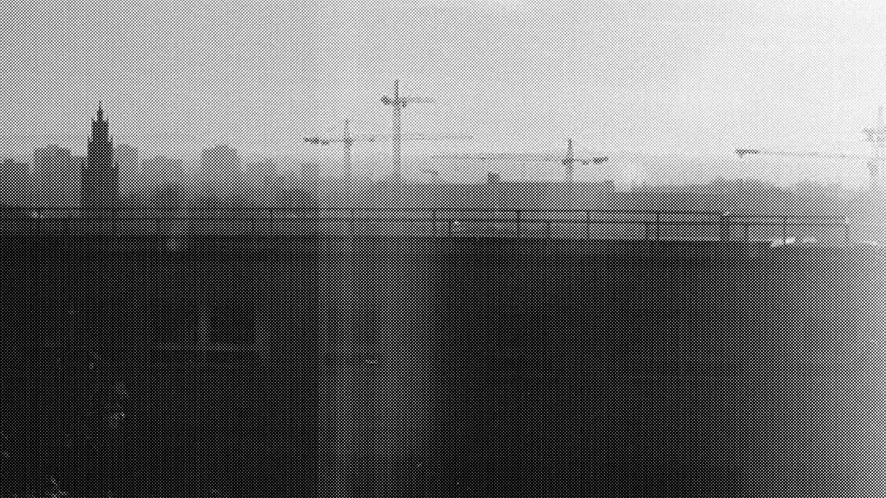

Ghost Modernism
By Mark Fisher • “I am very lucky to be in the possession of what I at times think of as a ‘haunted’ camera,” Clean Eyes wrote to me, in response to my somewhat cursory observations on photography in the 2012/ hauntology post. “To give you some empirical info,” he continues, “I am very much an amateur, I don’t develop the work myself and to my knowledge it is only the eccentricities of the machine I use which create such occasionally uncanny results.”
Clean Eyes’ pictures of cities as construction sites have a deep resonance with Marshall Berman’s All That Is Solid That Melts Into Air, which I’m ashamed to say I read for the first time only very recently, prompted by its being used as the epigraph to Jon Savage’s Joy Division documentary. Berman’s observations on the interplay of modernism, modernity and modernization, in fact, were roughly contemporaneous with the shift into post-Fordism at the end of the 70s that Joy Division’s records converted into harrowing black and white expressionism. Berman’s own first encounter with modernization was early, and traumatic: he had seen his own neigbourhood in the Bronx literally cut in two by a cubistic expressway driven through by architect Robert Moses, whom he characterises as “the latest in a long line of titanic builders and destroyers”, including Louis XIV, Peter the Great, Stalin, Faust, Ahab, Kurtz, Citizen Kane. “For ten years, through the 1950s and early 1960s,” Berman remembered, “the center of the Bronx was pounded and blasted and smashed. My friends and I would stand on the parapet of the Grand Concourse, where 174th Street had been, and survey the work’s progress the immense steam shovels and bulldozers and timber and steel beams, the hundreds of workers in their variously colored hard hats, the giant cranes reaching far above the Bronx’s tallest roofs, the dynamite blasts and tremors, the wild, jagged crags of rock newly torn, the vistas of devastation stretching for miles to the east and as far as the eye could see and marvel to see our very ordinary nice neighborhood transformed into sublime, spectacular ruins.”
Yet Berman’s response to modernization – and to Moses – is valuable because of its nuance: the Moses expressway is not the sole route that modernization could take, although – in a gambit that will become characteristic of neoliberalism – it presents itself as such. To resist such developments was, its opponents were bullyingly told, to stand against modernization itself; but Berman wants to keep hold of another modernism – a modernism not of the motorway, but of the street and the public space. His account of modernism is above all an account of different streets: Baudelaire’s (and later Benjamin’s) Paris boulevards; the Nevsky Prospect in Petersburg, where Gogol’s characters wandered in a phantasmagoric haze and Dostoyevsky’s Underground Man challenged the officer, his supposed superior, and in that challenge – pathetic and hopeless as it at first sight seems – made himself and a whole hierarchical social structure suddenly visible, and hence capable of being overturned.
Berman was deeply suspicious of postmodern theory, because he thought that modernity had not been superceded. What he couldn’t quite see in 1982 – it would take Jameson and Harvey’s interventions later in the decade to demonstrate this – was the way in which the modernist expressway would lead into the cul-de-sac of postmodernism, in which perpetual instability – “they are rebuilding the city, yes always” – becomes decoupled from cultural innovation. When all that is solid melts into air, the eventual result is not the sublime decimation that Berman witnessed in the Bronx, but the lure of simulation: Dick’s reconstructed small town America and Prince Charles’ ye olde English villages lie ahead, their “timeless charm” covering over the implacable churn of the abyssal excavators always working behind the screens.
the busier you are/ the less you see
Jane Jacobs emerges in Berman’s account as an ambivalent figure. She is a corrective to Robert Moses’s Kanesianism, her delineations of “the ecology and phenomenology of the sidewalks” a woman’s-eye alternative to the Olympian planners’ gaze which conceives of people as an obstruction, as Moses did. (As Berman reconstructs it, Jacobs’ vision of the city as “a vast informal network” of shopkeepers and tradespeople, of a cycle of tiny routines, reminds me of nothing so much as Grace Jones’ “The Apple Stretching”.) At the same time, though, Berman recognised that the “undertow of nostalgia for a family and a neighborhood in which the self could be securely embedded” in Jacobs’ work make it ripe for appropriation by the New Right. Hence Jacobs’ pivotal role – alongside Jonathan Raban’s Soft City – in Harvey’s The Condition Of Postmodernitylater. Their quiet polemic against planning, their celebration of the city as a shifting dance, helps to prepare the way for a postmodernism which has photoshopped out the kind of public and popular modernism which Berman celebrated. Jacobs’ emphasis on a “feminine” city and the domestic sphere presage an ideological shift – the occlusion of the public by the family (which is resurgent at the level of ideology in part because it is shattered empirically). There’s a great deal still to be said about the way in which a certain “feminisation” of culture – the fixation on emotions, domesticity and personal grooming – has been essential to the ideological destruction of the concept of the public over the last thirty years.
So we’re back to hauntology. And Berman was already there, in 1982, when, as his book moves towards its close, he is calling up ghosts – not rural revenants, but the ghosts of past modernisms and their unfulfilled promises: he ruefully notes that, part of what was destroyed by Moses’ expressway was nothing other than older versions of modernism. In his introduction, Berman invokes Brasilia, a city, like Petersburg, built ex nihilo – but without any public squares. Once it was the dictators who sought to eliminate public space; but the destroyer of public space now, cloaked in the language of ‘choice’, ‘diversity’ and ‘interaction’, is the wireless capsule of the unpiloted OedIPod…
Wel-come to Liberty City…
← Back to All Articles